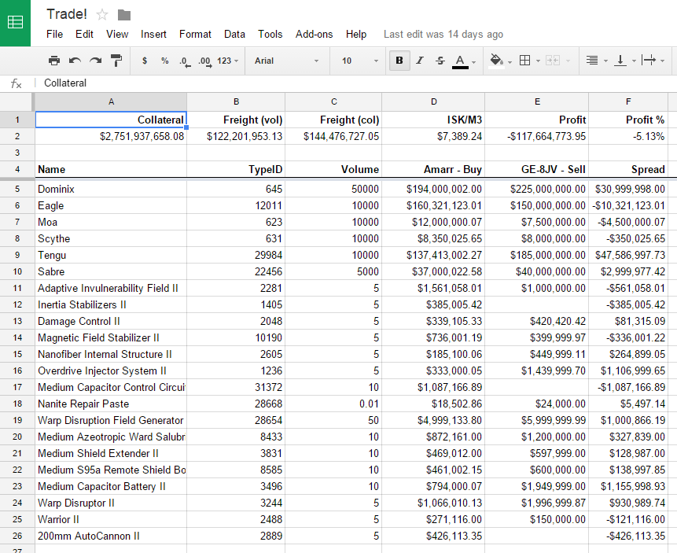
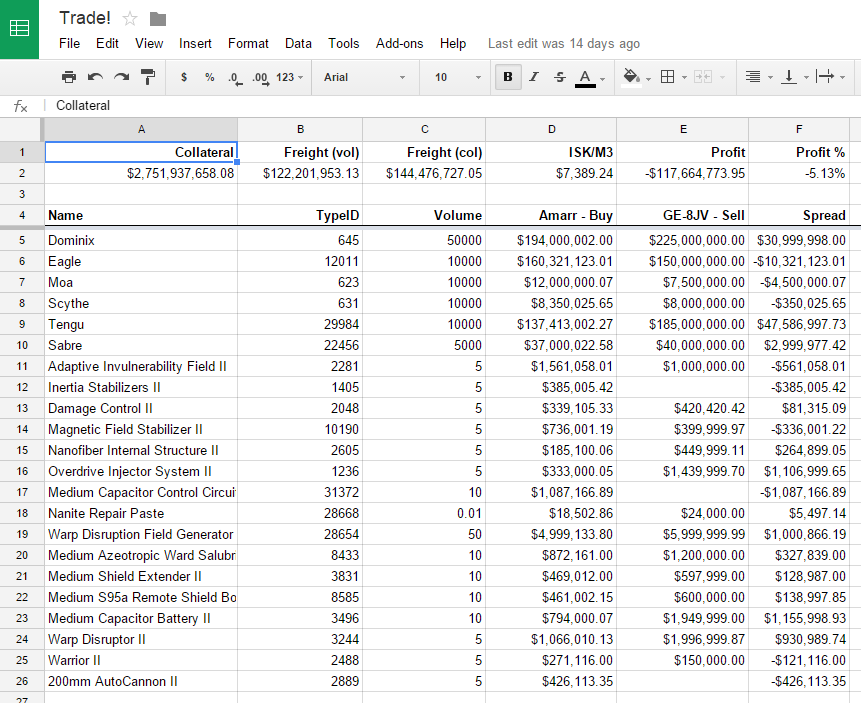

The Cloud is Your Free Hobby Computer
by Les Orchard / @lmorchard
Borrowing Other People's Computers for Your Hobbies
by Les Orchard / @lmorchard
IFTTT

Google Docs


by Les Orchard / @lmorchard
by Les Orchard / @lmorchard
